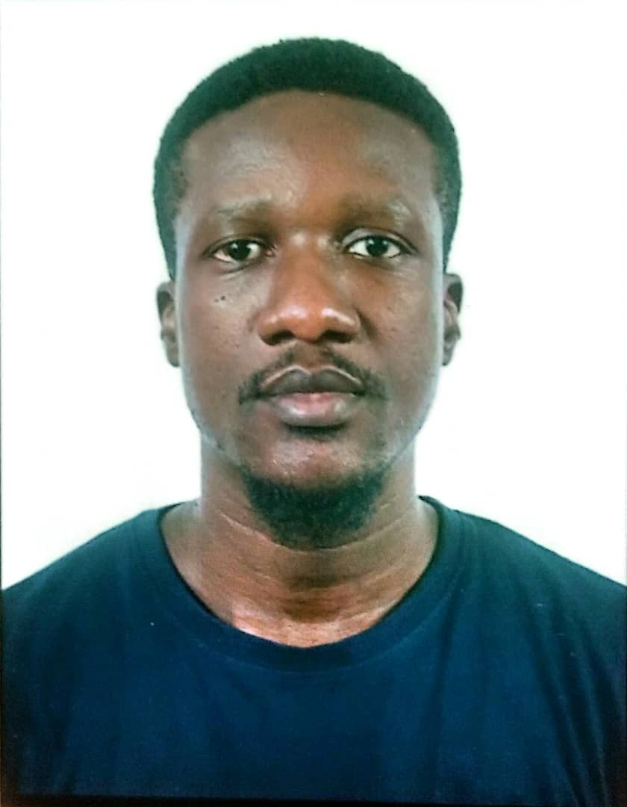

Chatt Kato
About Me

My name is Chatt. I was born in Nigeria and live with my family in Abuja. I currently work as a Sales & Business Development Manager at Netflare. My children are my world and I love spending time with them. I enjoy traveling, learning new things, and meeting new people.
Abuja, Nigeria
Nigeria is the most populated country in Africa and has the largest economy on the continent. It is home to two major rivers, the River Niger and River Benue, and they both meet at Lokoja, Kogi state at a location called the Confluence. Abuja is the capital city of Nigeria and is called the Federal Capital Territory.